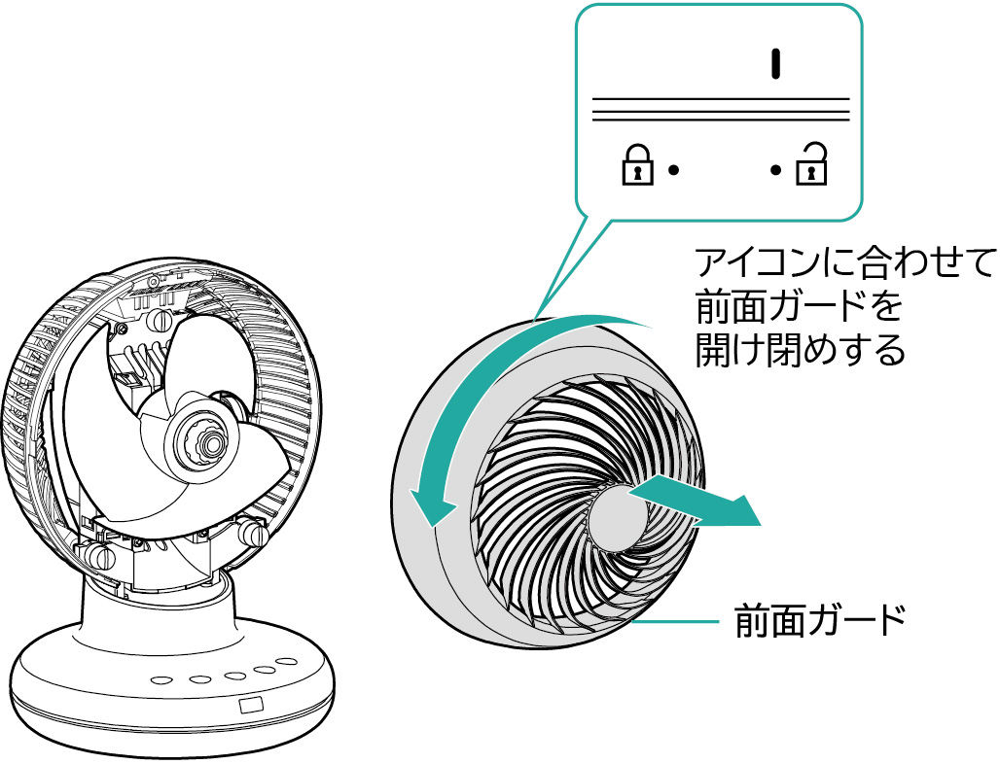
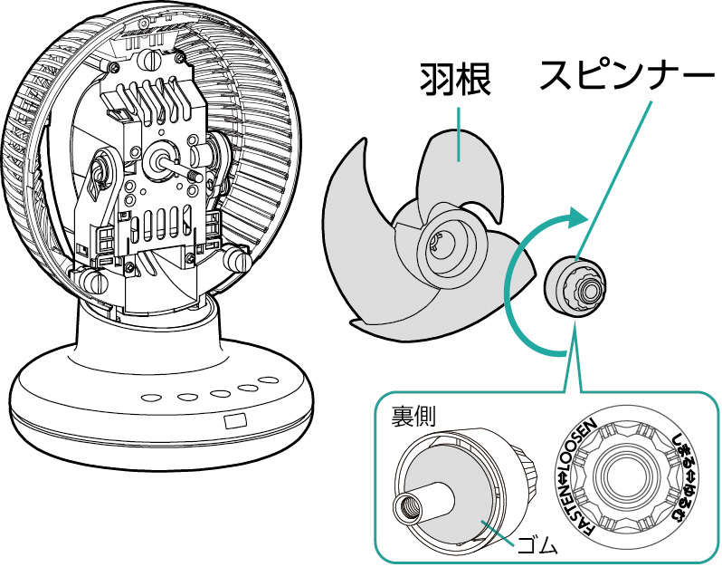
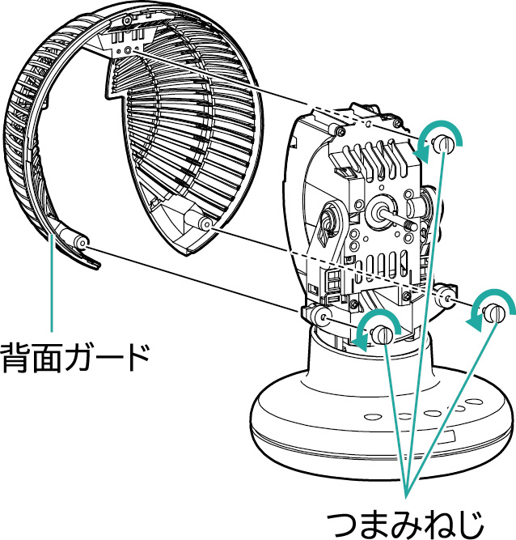

ほこりなどが付いたまま使用すると、故障の原因になります。
汚れ具合を見て、定期的にお手入れしてください。
前面ガード・羽根・背面ガードの取り外しかた
1．前面ガード：ロック解除アイコンに合わせて前面ガードを取り外してください。

2．羽根：スピンナーを時計回りに回して取り外し、羽根を取り外してください。

3．背面ガード：つまみねじ（3か所）を取り外し、背面ガードを取り外してください。
※つまみねじがかたい場合は、コインなどで取り外してください。

取り付ける際は取り外しと逆の順番で取り付けてください。
| 関連ページ |